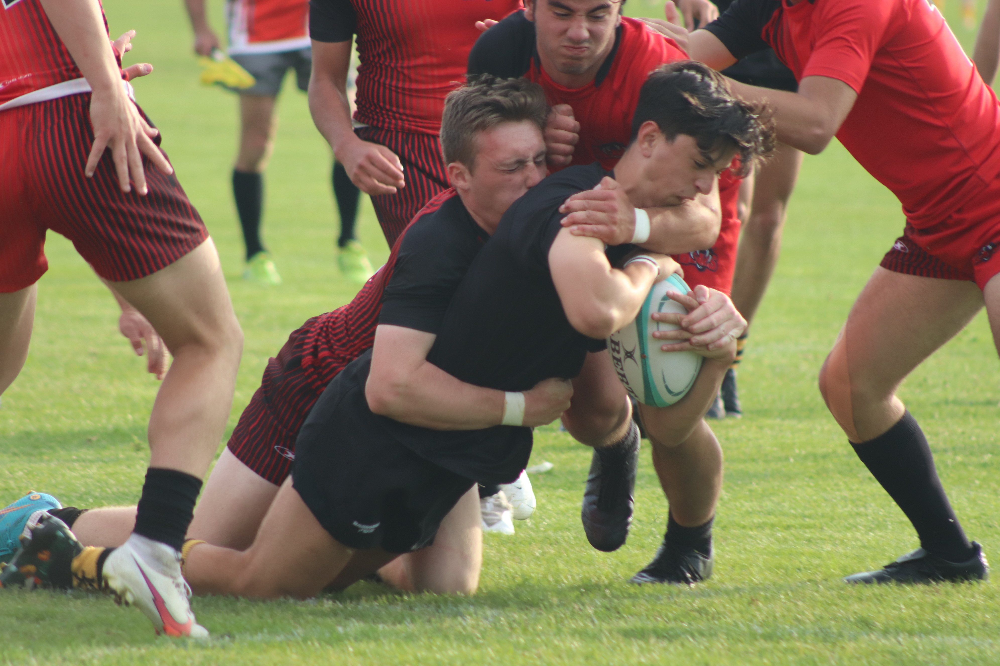

I was born and raised on Vancouver Island in British Columbia. Growing up an avid gamer, I always wanted to become a computer programmer. Thus I entered my undergraduate in software engineering at Western University. Throughout my life I have been a strong athlete that plays every kind of sport. The competitive spirit that I gained from my family has ceeped into every facet of my life. Therefore I always strive to be the best I can be.
